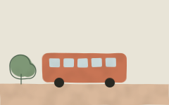
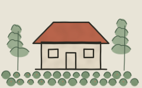
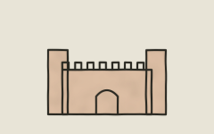
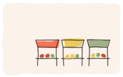

Planning a trip has become a trip in itself.
Finding a destination is one task. Booking transport is another. Comparing stays, checking reviews, choosing what to do, estimating travel time and getting everyone to agree are separate tasks again — each on a different site, chat or call.
Destinationsearch, reels, friends

Transportbooking sites
Stayseveral platforms
Activitiesblogs & tips
Itinerarynotes & memoryGroupcalls & chats
Decisionlong discussions
What if there were someone who could bring all those pieces together?
Someone who understood what you wanted, considered your constraints, curated the options and helped shape the trip — without taking the final decision away from you.